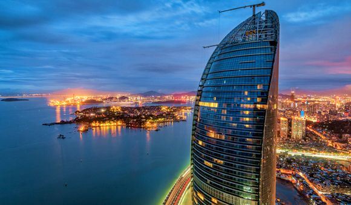
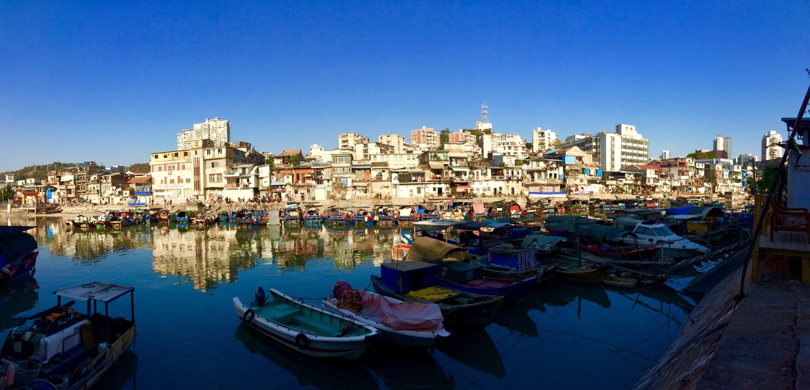
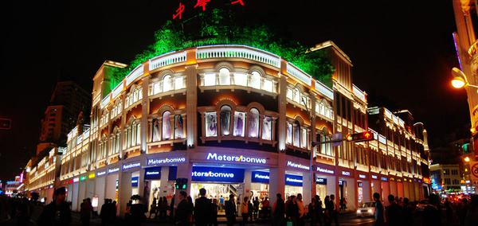
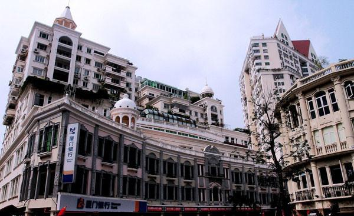
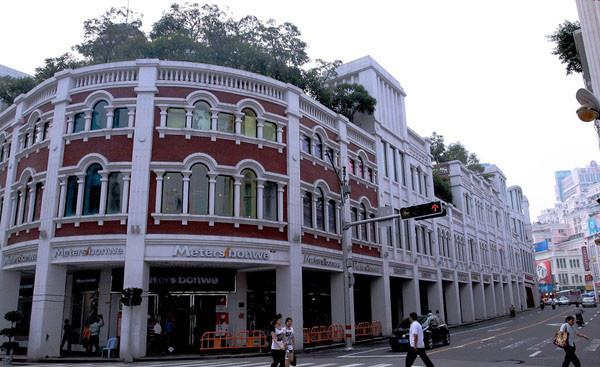
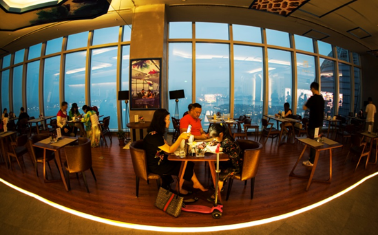
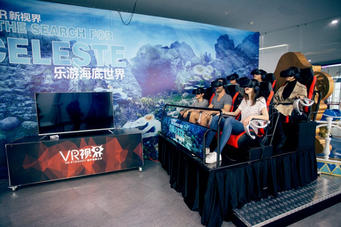
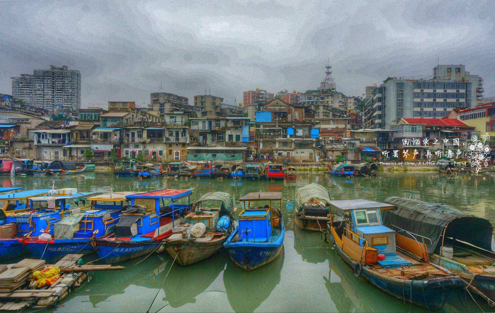

中华十大名街
闽南元素骑楼
-

- 
- 
寻踪老厦门
行程概要
- 行程天数1日游
- 目 的 地厦门
- 线路类型夜游厦门
- 推荐指数★★★★★
- 行程特色富有小资情调,闽南风味美食
线路介绍
费用说明
预订须知
相关产品
线路介绍
-
第1天
D1
第1天
寻踪老厦门
行程安排
16：00|漫步在“中华十大名街”【厦门中山路步行街】，它是全国唯一—条通向大海的商业街。这里欧式建筑风格和闽南元素骑楼巧妙组合，别具风格。您可以在这里品闽南风味美食、购两岸特色商品。
18：00|游览厦门新地标、第一高楼——【云上厦门】（营业至20：00）。在360°全景观海平台，既可俯瞰厦门门市区、鼓浪屿璀璨夜景，又可远眺台湾海峡，不远处大小金门岛的点点灯光依稀可见。
19：00|悠游在老厦门的发源地【沙坡尾】，这里汇集各路闽南特色的海鲜大排档一条街、各种富有小资情调的美食小店、数十家极具设计感、文艺范十足的各式店铺，这里还是厦门最早、最大的创意市集平台，会定期举办不同主题的市集活动。
21：00|在沙坡尾【微风乐集——微风两岸音乐文创馆】听海峡两岸原创音乐，该馆由台湾资深音乐人杨慕创办，他创作的“厦门亲像一首歌”在厦门会是晤间红遍大江南北。
22：00|返回酒店
景点 · 中山路
中山路位于厦门岛西南部，是厦门市思明区中华街道的一条东西走向的道路。日据时代称为大汉路（1933年－1945年），文革时期称为东方红路。中山路长约1.2公里，西起轮渡鹭江道，中跨思明南路与思明北路的分界点，东达新华路（即今厦门市公安局，原厦门市工人文化宫所在地）与公园南路相连。
中山路始建于1925年，连接了中山公园和鼓浪屿两个重要景区。沿街均为闽南风格的骑楼建筑，自2006年起以“旧城中山路历史风貌街区”的名义受《厦门市紫线控制专项规划》保护，严禁大面积拆除、开发活动。
中山路沿线是厦门商业的发源地，是厦门市最繁华的商圈之一，在旧城街区仍然保留着较完整的近代历史风貌。由于走到底就是厦门轮渡码头，很多去鼓浪屿的游客，会顺带来逛一下，这里遍布各种厦门小吃、特色商店和酒吧等，是吃货们的朝拜圣地。

中山路

中山路

中山路
景点 · 世茂云上厦门观光厅
世茂云上厦门观光厅, 伫立于厦门思明区大学路世茂海峡大厦B塔55F，拥有厦门最高的海拔视野。 1300平米的观光厅集高空视野、多媒体互动、休闲娱乐为一体。置身300米高空，可眺望海上花园鼓浪屿，俯瞰“最富有厦门气息”的厦港片区。万石山、厦门大学、南普陀、环岛路等“老厦门”名片一览无遗。一衣带水的金门岛、台湾海峡尽收眼底。世茂云上厦门观光厅以独特视角看山、望海、赏园、观涛，在这里你可尽情地享受纯“私房”海天景色。

世茂云上厦门观光厅

世茂云上厦门观光厅

世茂云上厦门观光厅
景点 · 沙坡尾
沙坡尾是老厦门港的避风坞，是老厦门渔民生活的缩影。不仅有着丰厚的历史底蕴，更是现在厦门旅游的新去处。斑驳的旧石板路，岸上生锈的铁环，破败的门沿上依旧贴着崭新的春联，偶有几只白鹭展翅飞过，追逐打闹的孩子吃着冰淇淋，沙坡尾的夏天莫过于此。闹市中的一分宁静，老旧却不腐朽。
沙坡尾

沙坡尾
沙坡尾
温馨提示
1.本行程酒店正常办理入住时间均为14：00，若您于14：00之前到达，酒店如有空房即可安排入住，如没有您可以将行李先寄存在前台，自行外出游览再办理入住，抵达酒店后报预订人姓名，拿入住人证件（成人请提供身份证原件等有效证件，儿童请出示户口本原件）办理入住手续。
2.标间/大床随机安排，如有特殊需求，请签约前与您的专属客服进行确认，尽量安排不保证
3.此接机服务非我公司专车，会有其他同时间抵达的客人一同搭乘，逐一送至酒店，请您见谅。
2.标间/大床随机安排，如有特殊需求，请签约前与您的专属客服进行确认，尽量安排不保证
3.此接机服务非我公司专车，会有其他同时间抵达的客人一同搭乘，逐一送至酒店，请您见谅。
4.在厦住店中国籍旅客必须凭身份证办理入住，不支持护照等其他有效身份证件，请您务必使用身份证哦。
早餐：无；午餐：无；晚餐：无
出行须知
注意事项
• 为了您人身、财产的安全，请您避免在公开场合暴露贵重物品及大量现金。上街时需时刻看管好首饰、相机等随身物品。
•游泳、漂流、潜水、滑雪、溜冰、戏雪、冲浪、探险、热气球、高山索道等活动项目，均存在危险。参与前请根据自身条件，并充分参考当地相关部门及其它专业机构的相关公告和建议后量力而行。
•为确保锂电池的安全运输，避免发生不安全事件，我们友情提醒您，民航局将对旅客携带锂电池乘机进行严格检查。详情请参考 民航局关于旅客行李中携带"锂电池、充电宝"乘机规定的公告。
•乘坐国内航班的旅客，居民身份证过期不能继续使用。若有效期满的，可以凭临时居民身份证或公安机关出具的贴有本人近期免冠证件照、并加盖户籍专用章、注明有效期的《申领居民身份证回执》作为有效乘机身份证件替代使用。同时中华人民共和国护照可以作为有效乘机身份证件，办理国内航班购票、值机、安检手续；旅客乘坐国内航班，办理购票、值机、安检手续时，应当使用同一个有效乘机身份证件。中国大陆地区居民使用往来港澳通行证、往来台湾通行证乘坐国内航班的旅客，必须同时提供居民身份证或者民用机场公安机关签发的《乘坐民航飞机临时身份证明》才可办理登机手续。 特别提醒：凡是乘机的16周岁以下中国大陆地区居民（包含婴儿），务必出示包括出生证明、户口薄或户口所在地公安机关出具的身份证明（16周岁以下的人需在户籍所在地派出所出具身份证明，机场派出所无法开具临时证明）才可办理登机手续。 具体实施细则以机场相关部门指导意见为准。
 330445074@qq.com
330445074@qq.com 12345
12345